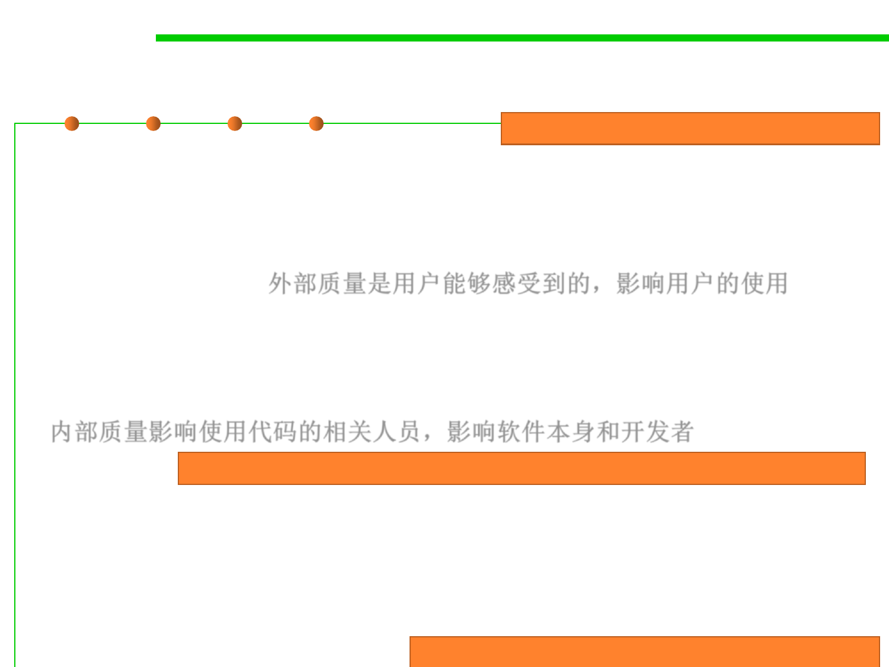

1.2 Quality Objectives of Software Construction
External and internal quality factors
External quality factors affect users.
▪ External quality factors: qualities such as speed or ease of use,
whose presence or absence in a software product may be detected
by its users (not only the people who actually interact with the final
products, but also those who purchase the software or contract out
its development). 外部质量是用户能够感受到的，影响用户的使用
▪ Other qualities applicable to a software product, such as being
modular, or readable, are internal factors, perceptible only to
computer professionals who have access to the actual software text.
内部质量影响使用代码的相关人员，影响软件本身和开发者
Internal quality factors affect the software itself and its developers.
▪ In the end, only external factors matter.
▪ But the key to achieving these external factors is in the internal
ones: for the users to enjoy the visible qualities, the designers and
implementers must have applied internal techniques that will ensure
the hidden qualities.
External quality results from internal quality.